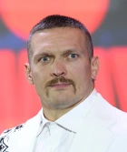

Olympic champion, undisputed world champion in cruiserweight and heavyweight divisions — the foundation of modern Ukrainian and global boxing history.
Mission of Oleksandr Usyk is to represent his country on the world stage, demonstrate the unbeatable strength of spirit, and support people through his charity work.
The unique fighting style, incredible footwork, and mental stamina of our champion mean a significant authority in the sports industry. Oleksandr is «you» with tactics: he thoroughly understands the structures of the fight, thoroughly knows how to outsmart his opponents, and masterfully manages his career, with his total professional earnings crossing the mark of 100 million dollars.
Oleksandr Usyk is the real pride of Ukraine and a symbol of absolute dedication to his dream!
The champion was born on January 17, 1987, in Simferopol.
Contacts & Media:
Official promoter company: Usyk-17 Promotions, Kyiv, Ukraine